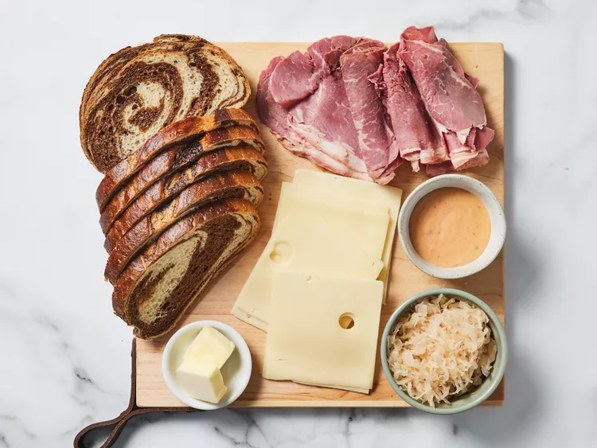
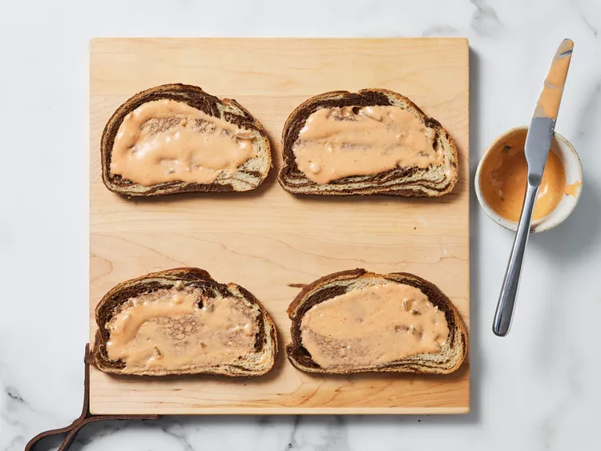
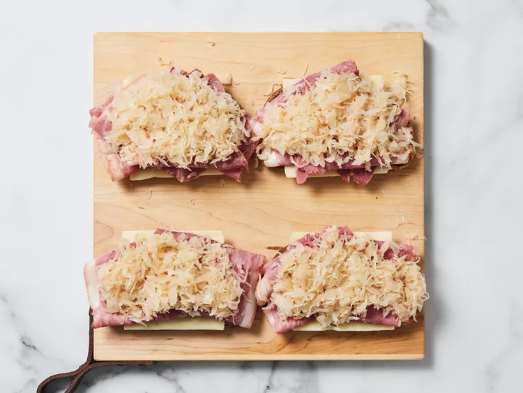

Reuben Sandwich
Home
Description
A Reuben is a grilled sandwich featuring corned beef on rye bread. The Reuben is a menu staple in Jewish-style delicatessens, but it's not technically kosher because it combines meat and cheese.
A traditional reuben sandwich consists of thinly sliced corned beef, Swiss cheese, and sauerkraut on rye bread slathered with Russian or Thousand Island dressing.
Ingredients
- 8 slices rye bread
- ½ cup Thousand Island dressing
- 8 slices Swiss cheese
- 8 slices deli sliced corned beef
- 1 cup sauerkraut, drained
- 2 tablespoons butter, softened
Directions
-
Gather all ingredients and preheat a large griddle or skillet over medium heat.
 -
Spread one side of bread slices evenly with Thousand Island dressing.
 -
On four bread slices, layer one slice Swiss cheese, 2 slices corned beef, 1/4 cup sauerkraut, and a second slice of Swiss cheese. Top with remaining bread slices, dressing-side down. Butter the top of each sandwich.
 -
Place sandwiches, butter-side down on the preheated griddle; butter the top of each sandwich with remaining butter. Grill until both sides are golden brown, about 5 minutes per side.
-
Serve hot. Enjoy!